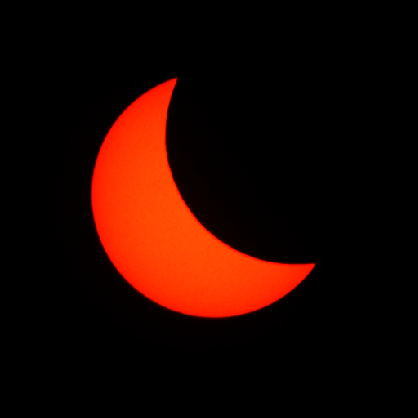

hiya !! this is my website lol testing testing testing testingtestingtestingtestingtesting
this stuff is placeholder until i actually theme it


hiya !! this is my website lol testing testing testing testingtestingtestingtestingtesting
this stuff is placeholder until i actually theme it
powered by:
bg: Amazing Shots yt